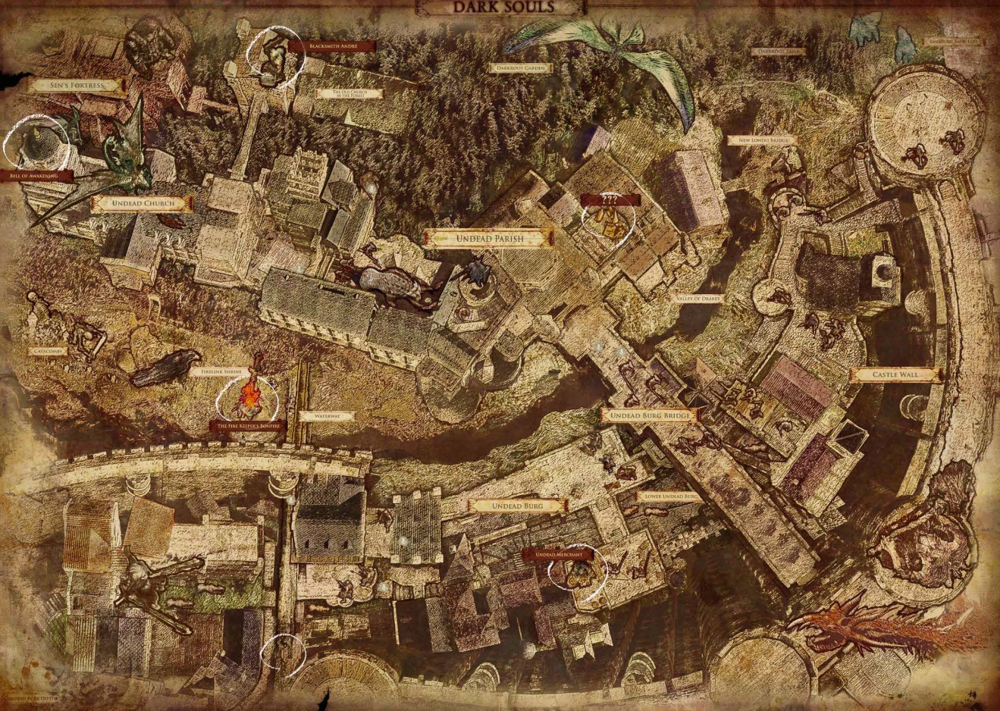
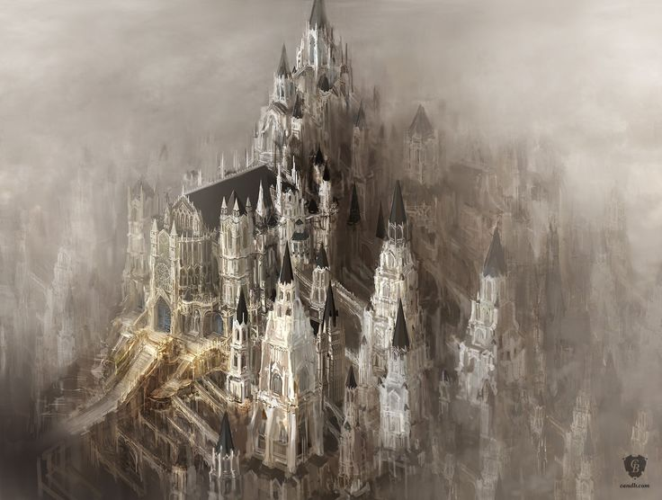
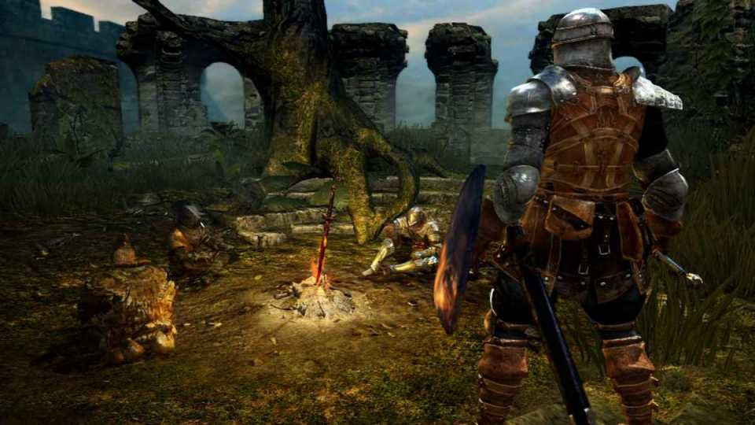
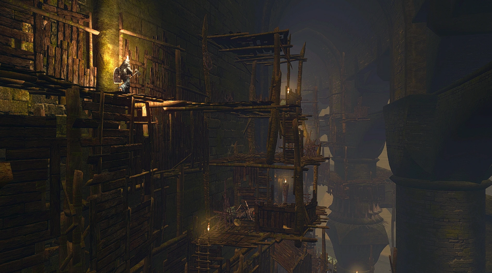
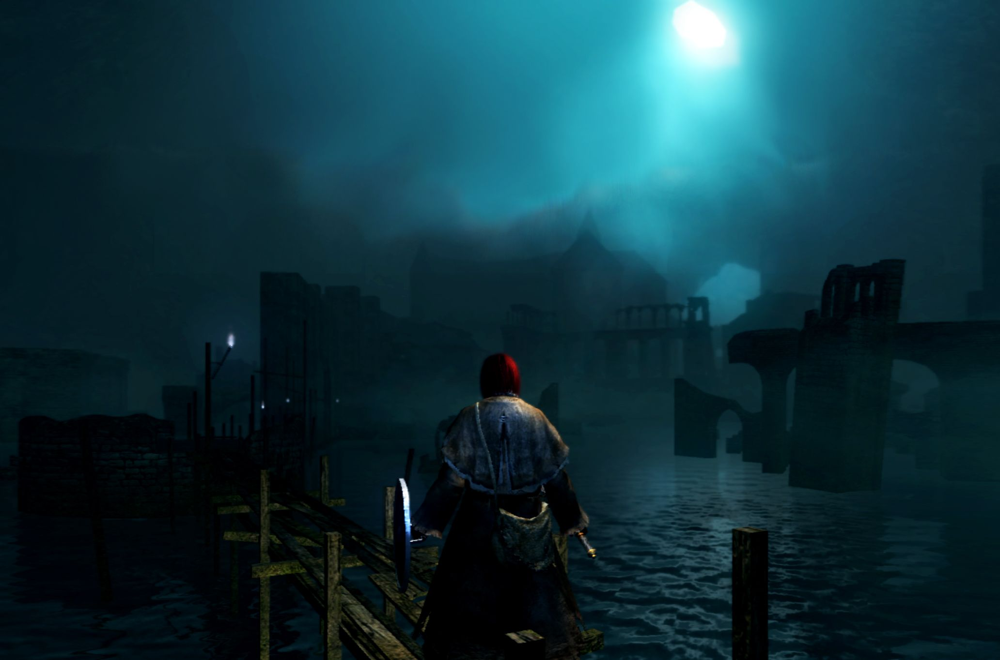
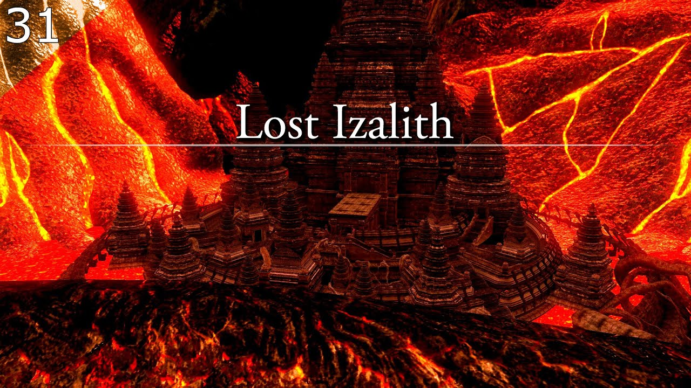

O Mundo Interconectado
Lordran é reconhecida por seu level design inteligente, conectando áreas de forma orgânica através de elevadores, atalhos e passagens ocultas.
Explore as regiões mais perigosas, misteriosas e memoráveis de Dark Souls Remastered.

Lordran é reconhecida por seu level design inteligente, conectando áreas de forma orgânica através de elevadores, atalhos e passagens ocultas.
Antiga capital de Gwyn, Anor Londo é uma das regiões mais icônicas de Dark Souls, marcada por arquitetura colossal, cavaleiros prateados e a batalha contra Ornstein & Smough.

Firelink Shrine funciona como principal ponto de descanso, conectando diversas regiões importantes do jogo.

Conhecida por sua dificuldade, estruturas precárias e veneno constante, Blighttown se tornou uma das áreas mais memoráveis da franquia.

Tomada pelos Darkwraiths e pelos fantasmas, New Londo representa a corrupção causada pelo Abismo.

Após a tentativa fracassada da Witch of Izalith de recriar a Primeira Chama, a cidade foi consumida pelo Caos e pelos demônios.

O mapa de Dark Souls é considerado um dos melhores level designs da história dos videogames, graças à sensação contínua de descoberta e conexão.
Cada região possui identidade própria, refletida em iluminação, trilha sonora, arquitetura e inimigos.